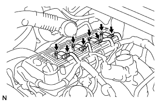

CUỘN DÂY ĐÁNH LỬA > LẮP |
| 1. LẮP CUỘN ĐÁNH LỬA |
|  |
Lắp 4 cuộn dây đánh lửa.
Lắp cuộn đánh lửa vào bugi, cài khớp cuộn đánh lửa vào nắp đậy nắp quy lát và lắp bu lông.
Lắp 4 giắc của cuộn đánh lửa.
| 2. LẮP ỐNG NỐI NẠP KHÍ |
| 3. NỐI CÁP VÀO CỰC ÂM ẮC QUY |
| 4. TIẾN HÀNH THIẾT LẬP BAN ĐẦU |
Tiến hành thiết lập ban đầu (Xem trang Kích chuột vào đây).